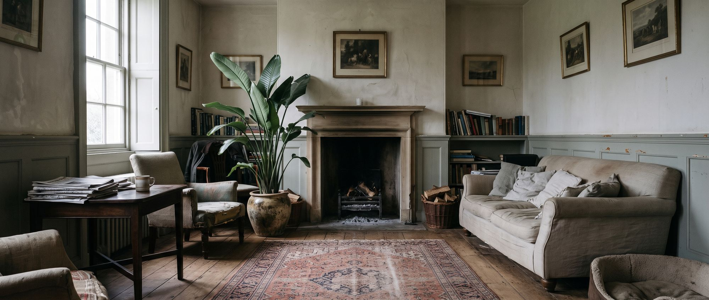
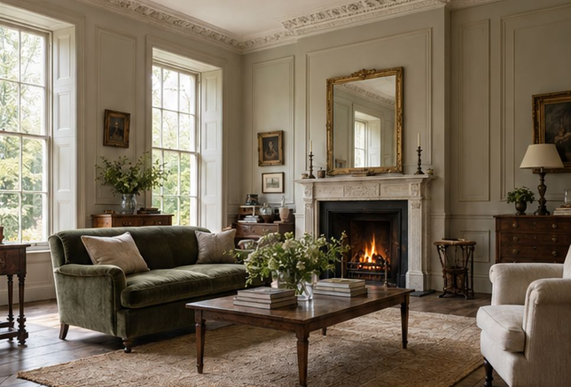

Each has a homepage and a British Interior page. Scroll slowly; most of the motion is tied to the scroll.
Room images are AI concept renders and are labelled as such. The opening film is a sequence of stills standing in for footage to shoot.

Direction 1Ivory pages with olive used sparingly, as the brief describes. Closest to A, with the drawings of C.

Direction 2Deep olive throughout, warm light and brass. Closest to B, with the drawings of C.